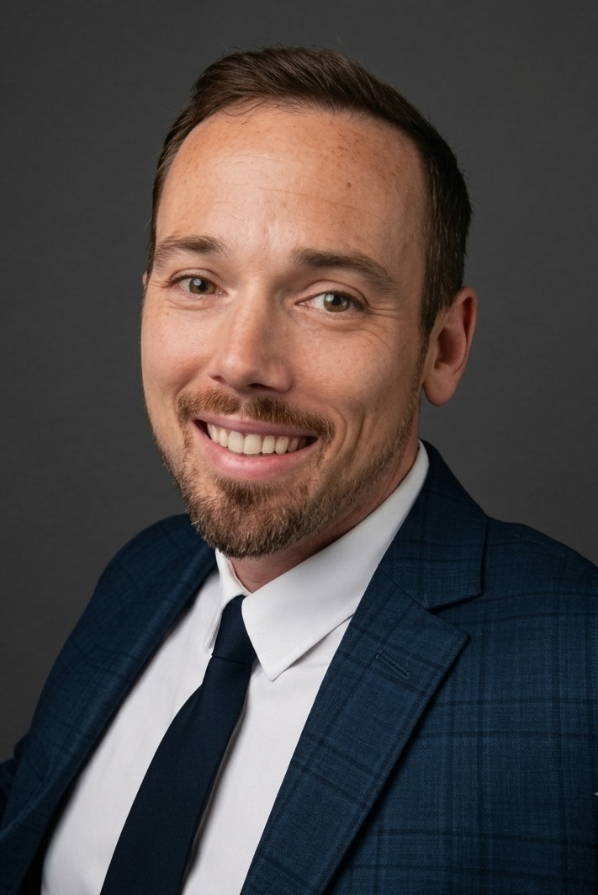

Respect
Honoring each individual’s rights, wishes, and identity.
About Tampa Bay Guardians
I bring that same commitment to the people and families I serve today.

David Martin is the founder of Tampa Bay Guardians, a disabled veteran-owned professional guardianship business serving vulnerable adults throughout the Tampa Bay area.
David earned his bachelor’s degree in Kinesiology from the University of Kentucky before serving four years on active duty in the United States Air Force. Following his military service, he joined the Florida Agency for Health Care Administration (AHCA) as a long-term care facility surveyor. In this role, he gained extensive firsthand experience evaluating nursing homes and other long-term care facilities for compliance with state and federal requirements, quality of care, resident rights, and safety. This experience gives Tampa Bay Guardians a strong understanding of the long-term care system and the standards facilities are expected to meet. David later continued his career with the U.S. Department of Veterans Affairs.
Tampa Bay Guardians is built on service, integrity, accountability, and respect for every individual. The organization is committed to protecting the rights, dignity, financial interests, and medical well-being of the individuals it serves while providing professional and dependable guardianship services.
David founded Tampa Bay Guardians with the belief that guardianship is more than managing responsibilities—it is about advocating for vulnerable adults, ensuring they receive appropriate care, and keeping their best interests at the center of every decision.
What guides us
Honoring each individual’s rights, wishes, and identity.
Approaching every responsibility with care and accountability.
Being responsive, dependable, and truly engaged.
Let’s talk